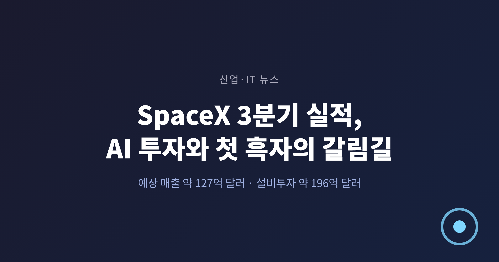
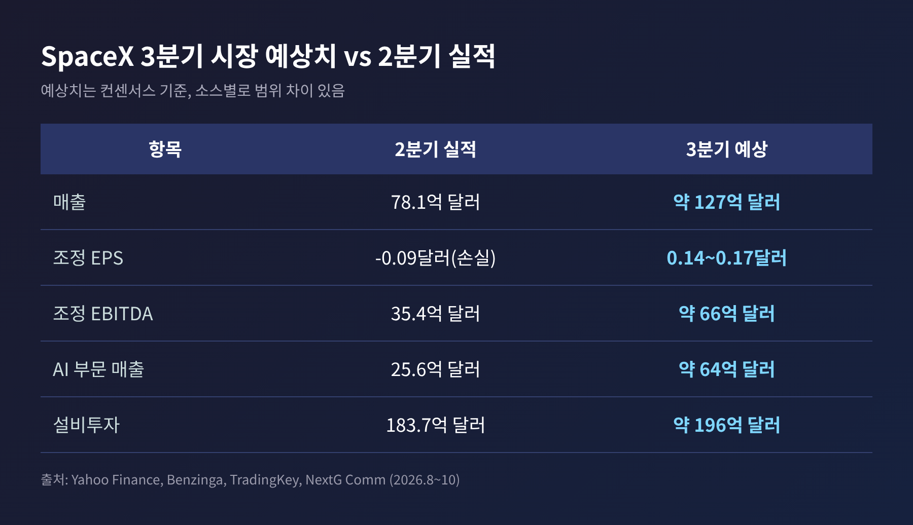
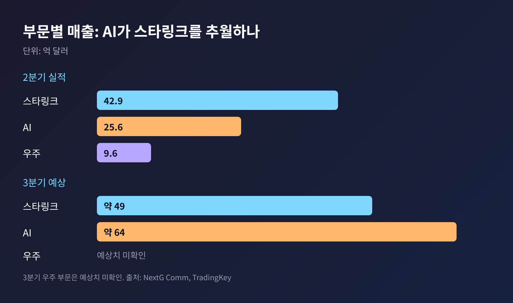
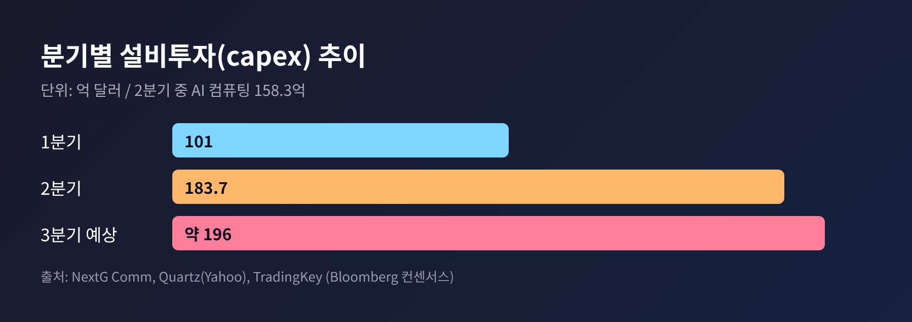
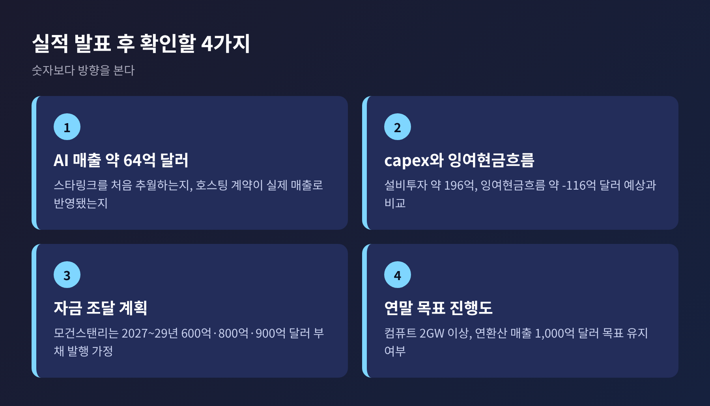

SpaceX 3분기 실적 발표 앞두고 쏠린 눈, AI 투자 부담과 첫 흑자 여부

오늘은 미국 시간 10월 20일 장 마감 후 발표되는 SpaceX의 3분기 실적을 짚어 보려 합니다. 상장 후 두 번째 성적표인데, 시장의 관심은 로켓보다 AI 데이터센터에 가 있습니다. 발표는 한국시간 21일 새벽이라, 이 글은 결과가 아닌 시장 예상치를 기준으로 썼습니다.
3줄 요약 - 시장은 3분기 매출을 약 127억 달러(2분기 78억 달러)로, 조정 EPS는 0.14~0.17달러 흑자로 봅니다. - 핵심은 AI 부문입니다. 매출이 약 64억 달러로 스타링크를 처음 넘어설 수 있다는 전망이 나옵니다. - 설비투자는 분기 약 190억~196억 달러로 예상되어, 자금 조달 부담이 최대 쟁점입니다.
■ 무슨 일인가: 상장 후 두 번째 성적표
SpaceX(나스닥: SPCX)는 10월 20일 장 마감 후 3분기 실적을 공개합니다. 웹캐스트는 동부시간 오후 4시 30분에 X로 중계됩니다. 테슬라는 하루 뒤인 21일에 실적을 내놓습니다.
SpaceX는 6월에 주당 135달러로 상장했습니다. 조달액은 857억 달러로 역대 최대 규모의 IPO였습니다. 이후 주가는 6월 고점 225.64달러에서 8월 초 약 105달러까지 내려갔고, 10월 16일 종가는 146.03달러였습니다. 고점 대비 약 28% 낮은 수준입니다. 공모가 부근을 오가는 셈입니다.
시장이 정리한 3분기 예상치는 이렇습니다. 소스마다 집계 시점이 달라 범위로 적습니다.

매출은 블룸버그 컨센서스로 약 127억 달러, 벤징가 집계로는 127.4억 달러입니다. 2분기의 78.1억 달러에서 60% 넘게 늘어나는 수치입니다. 조정 EBITDA는 약 66억 달러가 예상됩니다. 주당 이익이 예상대로 나오면 상장 후 처음으로 조정 기준 흑자를 내는 분기가 됩니다.
■ 왜 중요한가: 로켓 회사가 AI 인프라 회사로 바뀌는 중
예전엔 SpaceX를 발사체와 위성 인터넷 회사로 불렀습니다. 지금은 그 설명만으로 부족합니다.
2분기 부문별 실적을 보면 변화가 드러납니다. 스타링크가 속한 커넥티비티는 매출 42.9억 달러, 영업이익 16.56억 달러로 유일한 흑자 부문이었습니다. AI 부문(xAI, X, 클라우드)은 매출 25.6억 달러로 전년보다 247% 늘었지만 영업손실이 12.57억 달러였습니다. 우주 부문은 매출 9.62억 달러에 영업손실 5.42억 달러였습니다.
3분기에는 순서가 바뀔 수 있습니다. 트레이딩키가 인용한 컨센서스에서 AI 매출은 약 64억 달러로, 2분기 대비 약 150% 늘어 스타링크(약 49억 달러)를 앞지릅니다. 도이체방크는 AI 매출을 약 60억 달러로 보며, 클라우드 호스팅 계약이 처음으로 한 분기 전체에 반영된 효과로 설명합니다. 앤트로픽과 구글 같은 고객이 매달 수십억 달러를 낸다는 보도도 있습니다.
그래서 시장의 잣대도 달라졌습니다. 도이체방크의 에디슨 유 애널리스트는 이 주식이 이제 항공우주보다 AI 기업처럼 거래된다고 평가했습니다. 같은 표현이 반드시 옳다고 단정할 수는 없습니다. 다만 투자자가 보는 숫자가 발사 횟수에서 컴퓨팅 용량(GW)과 연간 반복매출(ARR)로 옮겨 간 것은 분명합니다.

■ 배경과 쟁점 1: 돈이 나가는 속도
가장 큰 쟁점은 설비투자입니다. 2분기 capex는 183.7억 달러로, 직전 분기 101억 달러에서 크게 늘었고 시장 예상(약 132억 달러)도 훌쩍 넘었습니다. 이 가운데 158.3억 달러가 AI 컴퓨팅에 들어갔습니다. 상반기 잉여현금흐름은 약 마이너스 250억 달러였습니다.
발표 당일 주가는 정규장에서 약 10% 올랐다가, 시간외에서 투자 부담 우려로 최대 8% 밀렸습니다. 실적이 예상보다 좋아도 지출이 더 크면 주가가 흔들린다는 사실을 보여 준 장면입니다.
3분기도 비슷한 흐름이 예상됩니다. 블룸버그 컨센서스 기준 capex는 약 196억 달러, 잉여현금흐름은 약 마이너스 116억 달러입니다. 도이체방크는 각각 약 190억 달러, 약 마이너스 140억 달러로 봅니다. 데이터센터 외에 칩 프로젝트 테라팹과 신형 스타십도 지출 요인으로 꼽힙니다.
재무 체력이 약한 것은 아닙니다. 2분기 말 현금과 유가증권이 1,000억 달러, 부채와 금융리스가 394억 달러였습니다. 수주잔고도 475억 달러였습니다. 그래도 지출 규모가 이 속도라면 외부 자금이 더 필요하다는 것이 월가의 공통된 시각입니다.
모건스탠리의 애덤 조너스는 19일 보고서에서 2027년 600억 달러, 2028년 800억 달러, 2029년 900억 달러의 부채 발행을 가정했습니다. 그는 추가 자금 조달 필요성이 투자 심리의 핵심 부담이며, 최근 불거진 '네오클라우드 부채 사태'를 고려하면 더욱 그렇다고 지적했습니다. 모델의 가장 큰 리스크라는 표현도 썼습니다. AI 컴퓨팅 수요가 있다고 해서 운영 업체가 수익을 내는 것은 아니라는 사례로, 코어위브의 신용 압박이 함께 거론됩니다.

■ 배경과 쟁점 2: 스타링크의 수익성과 스타십
스타링크 가입자는 2분기에 1,200만 명으로 1년 전의 두 배가 됐습니다. 3분기 예상은 1,350만~1,430만 명입니다. 반면 가입자당 매출(ARPU)은 66달러였고, 도이체방크는 3분기에 64달러로 내려갈 수 있다고 봅니다. 로이터가 전한 2분기 자료에서도 가입자당 평균 매출은 1년 전보다 22% 줄었습니다. 해외로 시장을 넓히고 저가 요금제를 내놓은 영향입니다. 가입자는 늘고 단가는 낮아지는, 전형적인 확장기의 모습입니다.
스타십은 호재와 변수가 섞여 있습니다. 비행 14호는 처음으로 궤도에 진입해 스타링크 V3 위성 26기를 올렸습니다. 15호는 11월 초로 예정되어 있고, 조너스는 이번이나 다음 비행에서 발사체 '캐치'(회수)가 가능하다고 봅니다. 7월의 엔진 점화 실패가 있었던 점을 떠올리면 일정이 그대로 지켜질지는 장담하기 어렵습니다.
스펙트럼 투자도 있습니다. SpaceX는 약 80억 달러에 800MHz 대역을 사들여 스타링크 모바일(휴대폰 직접 연결)을 준비합니다. 경쟁 구도에서는 로켓랩의 뉴트론이 2027년으로 미뤄졌고, 블루오리진은 외부 투자를 받으며 IPO 가능성이 거론됩니다. 머스크는 X에서 경쟁사의 미래 계획도 스타십보다 뒤처진다고 말했습니다.
■ 변수: 테슬라 합병설과 연말 목표
시장이 실적과 함께 귀를 기울이는 주제가 있습니다. 테슬라와의 합병설입니다. 공식 발표는 없습니다. 바클레이스의 댄 레비는 SpaceX가 테슬라를 주식 교환 방식으로 프리미엄을 얹어 인수하는 시나리오를 제시했습니다. 기준 가치는 SpaceX 약 2.1조 달러, 테슬라 약 1.5조 달러입니다. 12월 6일 테슬라 주주총회에서 표결하려면 10월 말에서 11월 초에는 발표가 나와야 한다는 계산입니다. 머스크가 합병 후 지분 약 37%, 의결권 약 56%를 갖게 된다는 추정도 함께 나왔습니다.
다만 머스크는 7월에 회사 결합 문제를 실적 발표에서 논의할 수 없다고 밝힌 바 있습니다. 이번 콜에서 명확한 답이 나올 가능성은 높지 않습니다. 합병설은 어디까지나 애널리스트의 시나리오로 보셔야 합니다.
이번 발표에서 더 중요한 것은 연말 목표의 진행 상황입니다. 회사는 연말까지 컴퓨트 용량 2GW 이상, 연환산 매출(ARR) 1,000억 달러를 제시해 왔습니다. 2027년 말에는 5~10GW가 목표입니다. 최근 넉 달 사이 네 번째 컴퓨트 호스팅 계약이 나왔고, 연 약 130억 달러 규모로 12월부터 시작됩니다. 에버코어ISI는 이번 분기가 보고 숫자보다 이런 목표로 평가받을 수 있다고 말했습니다.

■ 전망: 숫자가 좋아도 질문은 남습니다
월가의 시각은 대체로 우호적입니다. 35명의 애널리스트 중 28명이 매수, 5명이 보유, 2명이 매도 의견입니다. 평균 목표가는 약 216~217달러로 현재가보다 47% 안팎 높습니다. 목표가는 에버코어ISI 275달러, 바클레이스 254달러, 서스쿼해나 173달러 등으로 갈립니다. 최고 450달러, 최저 75달러까지 벌어져 있어 같은 회사를 두고 전혀 다른 그림을 그리는 셈입니다.
시나리오를 나누면 이렇습니다. 첫째, 매출과 이익이 예상에 부합하고 ARR 목표가 유지되는 경우입니다. 투자 부담이 용인될 여지가 커집니다. 둘째, 매출은 좋지만 capex가 예상을 또 넘기는 경우입니다. 2분기처럼 장중 상승과 시간외 하락이 반복될 수 있습니다. 셋째, AI 매출이 예상에 못 미치는 경우입니다. 높아진 기대 때문에 낙폭이 클 수 있습니다. 어느 쪽이든 이익이 나면 S&P 500 편입 논의가 거론될 수 있다는 관측이 있으나, 이는 가능성일 뿐 확정된 일정이 아닙니다.
한계도 분명히 적어 두겠습니다. 이 글의 3분기 수치는 모두 시장 예상치이고, 소스별로 최대 수 퍼센트 차이가 있습니다. 실제 발표 내용이 이와 다를 수 있습니다. 또 일부 보도(합병설, 로드스터 추력기 협업 등)는 양사가 확인하지 않았습니다.
정리하면 이렇습니다. 이번 실적은 한 분기의 이익보다 'AI 인프라에 이만큼 쓰고도 버틸 수 있는가'를 가늠하는 자리입니다.
"로켓 회사의 성적표인데, 질문은 데이터센터에 대한 것입니다."
발표 직후 매출 구성과 투자 계획이 어떻게 바뀌었는지, 이 글의 예상치와 한번 비교해 보시길 권합니다.